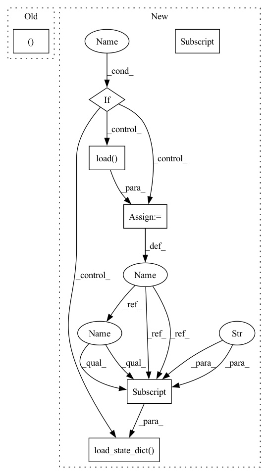

Pattern ID :24671

Before Change
// todo:
USER_ID = self.config["USER_ID_FIELD"]
ITEM_ID = self.config["ITEM_ID_FIELD"]
users, items = interaction[USER_ID], interaction[ITEM_ID]
scores = self.model.predict(interaction.to(self.device))
batch_size = users.size()[0]
scores = scores.detach().cpu().numpy()
After Change
break
def evaluate(self, eval_data, load_best_model=True):
if load_best_model:
// todo: more flexible settings
checkpoint_file = self.checkpoint_dir + "/model_best.pth"
checkpoint = torch.load(checkpoint_file)
self.model.load_state_dict(checkpoint["state_dict"])
message_output = "Loading model structure and parameters from {}".format(checkpoint_file)
print(message_output)
In pattern: SUPERPATTERN
Frequency: 3
Non-data size: 7
Instances
Fragment ID: 76496878
Project Name: rucaibox/recbole
Commit Name: 9a769dda3fd556549ce944046d6388298782c141
Time: 2020-07-13
Author: 2015201909@ruc.edu.cn
File Name: trainer/trainer.py
M Class Name: Trainer
N Class Name: Trainer
M Method Name: evaluate(3)
N Method Name: evaluate(2)
M Parent Class: AbstractTrainer
N Parent Class: object
M File Name: trainer/trainer.py
N File Name: trainer/trainer.py
M Start Line: 102
M End Line: 110
N Start Line: 149
N End Line: 165
'>
Before Change
// todo:
USER_ID = self.config["USER_ID_FIELD"]
ITEM_ID = self.config["ITEM_ID_FIELD"]
users, items = interaction[USER_ID], interaction[ITEM_ID]
scores = self.model.predict(interaction.to(self.device))
batch_size = users.size()[0]
scores = scores.detach().cpu().numpy()
After Change
break
def evaluate(self, eval_data, load_best_model=True):
if load_best_model:
// todo: more flexible settings
checkpoint_file = self.checkpoint_dir + "/model_best.pth"
checkpoint = torch.load(checkpoint_file)
self.model.load_state_dict(checkpoint["state_dict"])
message_output = "Loading model structure and parameters from {}".format(checkpoint_file)
print(message_output)
'>
Fragment ID: 76496877
Project Name: rucaibox/recbole
Commit Name: 9a769dda3fd556549ce944046d6388298782c141
Time: 2020-07-13
Author: 2015201909@ruc.edu.cn
File Name: trainer/trainer.py
M Class Name: Trainer
N Class Name: Trainer
M Method Name: evaluate(3)
N Method Name: evaluate(2)
M Parent Class: AbstractTrainer
N Parent Class: object
M File Name: trainer/trainer.py
N File Name: trainer/trainer.py
M Start Line: 102
M End Line: 110
N Start Line: 149
N End Line: 165
'>
Before Change
// evaluate on test set
model_1_ema.load_state_dict(torch.load(logger.get_checkpoint_path("best")))
print("Test on target domain:")
_, test_mAP = validate(test_loader, model_1_ema, target_dataset.query, target_dataset.gallery, device,
cmc_flag=True, rerank=args.rerank)
print("test mAP on target = {}".format(test_mAP))
print("oracle mAP on target = {}".format(best_test_mAP))
After Change
criterion_triplet_soft = SoftTripletLoss(margin=None).to(device)
// optionally resume from a checkpoint
if args.resume:
checkpoint = torch.load(args.resume, map_location="cpu")
model_1.load_state_dict(checkpoint["model_1"])
model_1_ema.load_state_dict(checkpoint["model_1_ema"])
model_2.load_state_dict(checkpoint["model_2"])
model_2_ema.load_state_dict(checkpoint["model_2_ema"])
args.start_epoch = checkpoint["epoch"] + 1
// start training
'>
Fragment ID: 76496875
Project Name: thuml/transfer-learning-library
Commit Name: 91cc646b6e3c004ef8e2aba07ee26ef7b652116f
Time: 2021-09-03
Author: chenbx18@mails.tsinghua.edu.cn
File Name: examples/domain_adaptation/reid/mmt.py
M Class Name: AnonimousClass
N Class Name: AnonimousClass
M Method Name: main(1)
N Method Name: main(1)
M Parent Class:
N Parent Class:
M File Name: examples/domain_adaptation/reid/mmt.py
N File Name: examples/domain_adaptation/reid/mmt.py
M Start Line: 39
M End Line: 164
N Start Line: 120
N End Line: 173
'>
Before Change
// evaluate on test set
model.load_state_dict(torch.load(logger.get_checkpoint_path("best")))
print("Test on target domain:")
_, test_mAP = validate(test_loader, model, target_dataset.query, target_dataset.gallery, device,
cmc_flag=True, rerank=args.rerank)
print("test mAP on target = {}".format(test_mAP))
logger.close()
After Change
criterion_triplet = SoftTripletLoss(margin=args.margin).to(device)
// optionally resume from a checkpoint
if args.resume:
checkpoint = torch.load(args.resume, map_location="cpu")
model.load_state_dict(checkpoint["model"])
args.start_epoch = checkpoint["epoch"] + 1
// start training
best_test_mAP = 0.
'>
Fragment ID: 76496882
Project Name: thuml/transfer-learning-library
Commit Name: 91cc646b6e3c004ef8e2aba07ee26ef7b652116f
Time: 2021-09-03
Author: chenbx18@mails.tsinghua.edu.cn
File Name: examples/domain_adaptation/reid/baseline_cluster.py
M Class Name: AnonimousClass
N Class Name: AnonimousClass
M Method Name: main(1)
N Method Name: main(1)
M Parent Class:
N Parent Class:
M File Name: examples/domain_adaptation/reid/baseline_cluster.py
N File Name: examples/domain_adaptation/reid/baseline_cluster.py
M Start Line: 37
M End Line: 156
N Start Line: 89
N End Line: 162